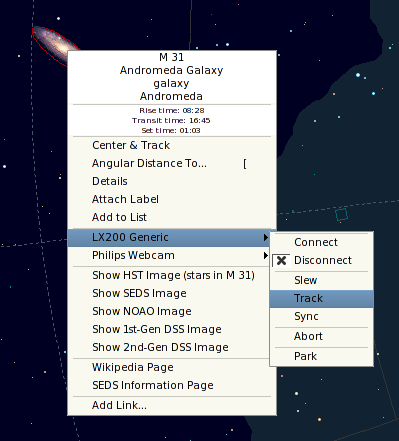
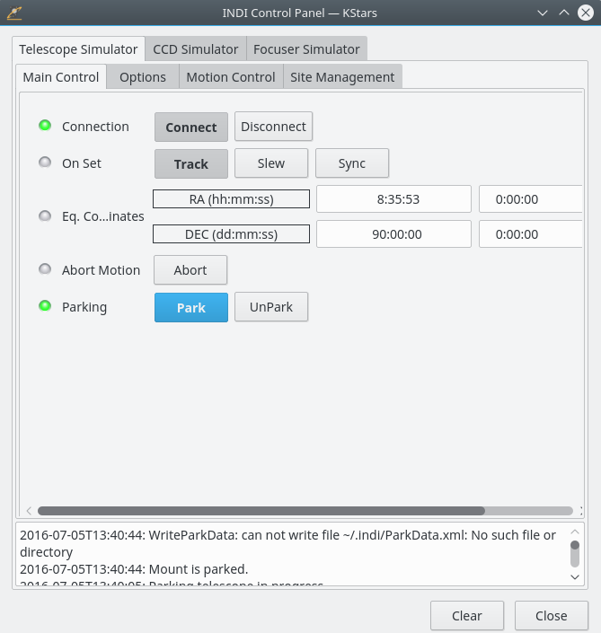

La plupart des télescopes sont équipés d'une interface RS232 pour la télécommande. Connectez la prise RS232 de votre télescope dans la prise série / USB de votre ordinateur. Habituellement, le RS232 se connecte au port série de votre ordinateur, mais, comme beaucoup de nouveaux portables ont abandonné le port série en faveur de ports USB / Firewire, vous pouvez avoir besoin de vous procurer un adaptateur USB pour utilisation avec les nouveaux portables.
Après avoir connecté votre télescope au port Série / USB, allumez votre télescope. Il est hautement recommandé de télécharger et installer le firmware (logiciel embarqué) le plus récent pour votre contrôleur de télescope.
Le télescope doit être aligné avant de pouvoir être utilisé correctement. Alignez votre télescope (une ou deux étoiles d'alignement) comme illustré dans le manuel de votre télescope.
KStars a besoin de vérifier les réglages d'heure et d'emplacement avant de se connecter au télescope. Ceci assure un suivi propre et une synchronisation entre le télescope et KStars. Les étapes suivantes vous permettront de connecter un matériel qui est connecté à votre ordinateur ; pour connecter et contrôler les périphériques distants, veuillez vous rapporter à la section Contrôle des périphériques distants.
Vous pouvez utiliser l'assistant de configuration du télescope, et il vérifiera toutes les informations nécessaires au processus. Il peut balayer automatiquement les ports pour les télescopes attachés. Vous pouvez lancer l'assistant de configuration en sélectionnant → .
D'une autre manière, vous pouvez connecter un télescope local en effectuant les étapes suivantes :
Déterminez votre emplacement géographique. Ouvrez la fenêtre → ou en actionnant l'icône représentant un Globe dans la barre d'outils, ou en saisissant Ctrl+G.
Déterminez vos heure et date locales. Vous pouvez changer en n'importe quelle heure ou date en sélectionnant → ou en actionnant l'icône Heure dans la barre d'outils. La fenêtre Régler l'heure utilise un composant graphique de choix de date standard dans KDE. Si vous avez besoin de remettre l'horloge à l'heure actuelle, actionnez simplement → .
cliquez sur le menu →
sous la colonne Périphérique, sélectionnez votre modèle de télescope.
cliquez sur le bouton .
cliquez sur le bouton pour fermer la boîte de dialogue du gestionnaire de matériel.
Réglages fréquents
Vous n'avez pas besoin de déterminer l'emplacement géographique à chaque fois que vous connectez un télescope. N'ajustez que les réglages nécessaires.
Vous êtes maintenant prêt à utiliser les fonctions du périphérique. KStars fournit deux interfaces graphiques interchangeables pour contrôler les télescopes :
Contrôler votre télescope
Contrôle de la carte du ciel : pour chaque périphérique que vous lancez dans le gestionnaire de périphériques, une entrée correspondants s'affichera dans un menu contextuel qui vous permet de contrôler les propriétés du périphérique. Vous pouvez exécuter des commandes comme Pivoter, Synchroniser et Suivre directement depuis la carte du ciel.
Voici une capture d'écran du menu contextuel avec un périphérique actif LX200 Classic :
Tableau de bord INDI : le tableau de bord offre à l'utilisateur toutes les fonctions gérées par un périphérique.
Le panneau est divisé en trois sections principales :
Onglets des périphériques : chaque périphérique actif additionnel occupe un onglet dans le panneau INDI. De multiples périphériques peuvent fonctionner simultanément sans affecter les opérations des autres périphériques.
Affichage des propriétés dans les onglets Contrôle principal et Options : les propriétés sont l'élément-clé dans l'architecture INDI. Chaque périphérique définit un jeu de propriétés pour communiquer avec le client. La position courante du télescope est un exemple de propriété. Des propriétés semblables du point de vue sémantique sont habituellement contenues dans des blocs logiques ou des groupes.
Afficheur de journaux : les périphériques rapportent leur état et accusent réception des commandes en envoyant des messages INDI. Chaque périphérique a son propre journal. Un périphérique n'envoie habituellement des messages qu'à son pilote de périphérique, mais un périphérique peut envoyer un message générique lorsque c'est approprié.

Vous n'êtes pas limité à l'utilisation d'une interface par le chevauchement, car les deux peuvent être utilisées simultanément. Les actions de Carte du ciel sont reflétés automatiquement dans le Tableau de bord INDI et vice versa.
Pour connecter votre télescope, vous pouvez soit sélectionner du menu contextuel des périphériques, soit actionner sous votre onglet de périphérique dans le Tableau de bord INDI.
Important
Par défaut, KStars essayera de se connecter au port /dev/ttyS0. Pour changer le port de connexion, sélectionnez → → et changez le port sous l'onglet de votre périphérique.
KStars met à jour automatiquement la longitude, la latitude et l'heure basés sur les réglages actuels de KStars. Vous pouvez les activer/désactiver en utilisant la page INDI dans le menu → . Dans la page INDI, vous pouvez indiquez à KStars d'afficher ou non les messages d'INDI dans la barre d'état. Par défaut, les numéros de port du serveur INDI se trouve dans la plage 7624 à 9000, mais vous pouvez facilement modifier cette plage en utilisant les boîtes de texte De et À de la section Port du serveur.
Si KStars réussit à communiquer avec le télescope, il retrouvera l'AD et la Déc courantes depuis le télescope et affichera une croix sur la carte du ciel, indiquant la position du télescope. Vous pouvez masquer la croix qui indique la position depuis le menu → .
Synchronisation de votre télescope
Si vous avez aligné votre télescope et que la dernière étoile d'alignement a été, par exemple, Vega, la croix doit être centrée autour de Vega. Si la croix était hors cible, vous pouvez cliquer avec le bouton sur la carte du ciel et sélectionner Synchroniser du menu du télescope. Cette action demandera au télescope de synchroniser ses coordonnées internes pour qu'elles correspondent à celles de Vega et la croix du télescope doit maintenant être centrée autour de Vega.
Voilà ! Votre télescope est prêt à explorer les cieux !
AVERTISSEMENT
N'utilisez jamais le télescope pour regarder le Soleil. L'observation du Soleil peut causer des dommages irréversibles à vos yeux et à votre équipement.